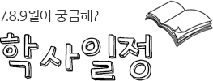
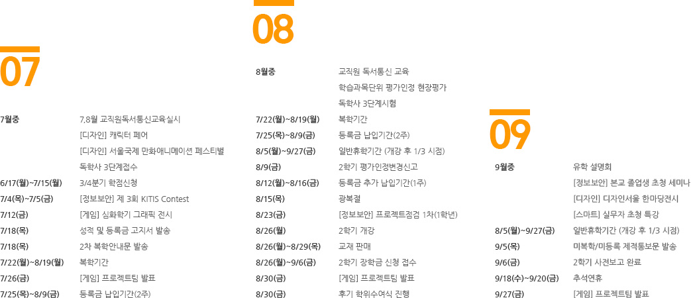
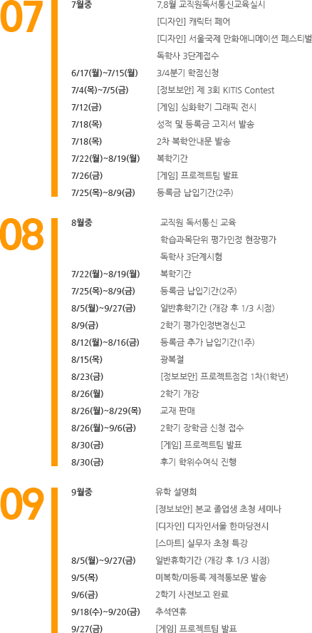
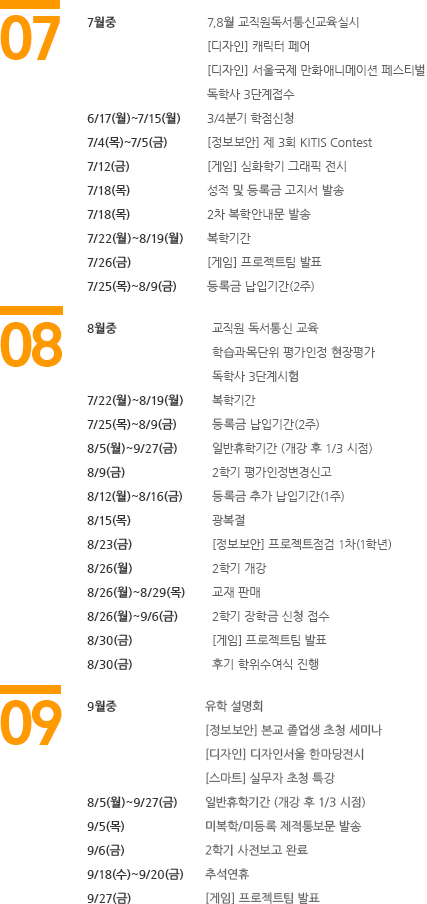
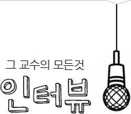
-
- 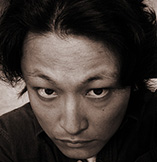
- 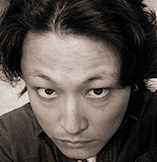
- 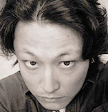
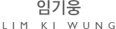
- Q. 디자인이란?
- A.다른 사람과의 소통이라고 생각합니다.
- 제품이나 패션, 영상이나 웹 등 다양한 디자인의 영역이 존재합니다. 그리고 우리의 생활속에 밀접한 관련이 있고요.
우리는 물건을 사용하면서, 옷을 입으면서, 화면을 바라보면서, 웹 서핑을 하면서, 각 영역의 디자이너가 만들어낸 디자인을 접하게 됩니다.
대학시절 이노디자인 김영세 사장님의 강연을 들은 적이 있습니다. 그 중 가장 인상적이었던 내용은 "디자인, 사랑으로 출발하라" 였습니다. 엄마를 위해 안마 쿠폰을 만들어 건네는 아들의 모습에서 디자이너의 마음도 그러해야 하지 않나라는 생각에 공감이 갑니다. 무엇인가를 만들어내는... 디자인하는 사람은 그것을 사용할 사람을 먼저 생각해야 합니다.
그래서 디자인의 출발점은 사람이고 가장 큰 목적은 사람과의 소통이라고 생각합니다.
-
- Q. 디자이너의 조건
- A.아직까지 국내에서는 웹 디자이너의 대우가 그리 좋은 편이 아닙니다.
- 거기에다 공부하고 연마해야 할 기술은 점점 많아지고 복잡합니다. 이런 현실에서 디자이너 라는 직업을 단순한 경제활동으로만 봐서는 절대 견뎌낼 수 없습니다. 자신이 정말 좋아하는 일이 어야만 한다는 거지요.
또한 웹 디자인 분야는 경력자일지라도 계속해서 공부하지 않으면 금세 도태 될 수 밖에 없습니다.
웹을 둘러싼 환경의 변화 속도가 빠르고 다양하 기 때문이죠.
자신이 진정으로 좋아하는 분야를 찾고 그 일을 잘 하기위해 끊임없는 노력하는 자세야말로 디자 이너에게 가장 필요한 조건이 아닌가 싶습니다.
“Stay hungry, stay foolish
끊임없이 갈망하고 우직하게 나아가라. ”
스티브 잡스가 스탠포드 졸업식 연설에서 한 말입니다. 디자이너에게 이 말보다 더 필요한 명언은 없다고 생각합니다.
- Q. 작업하면서 어려웠던 점
- A.역시 사람사이의 일이라 소통의 문제가 가장 큰 부분인 것 같습니다.
- 디자인은 모니터 화면을 통해 그래픽툴과 벌이는 싸움이 아닙니다. 클라이언트 뿐만아니라 같은 프로젝트를 진행하는 동료와의 의견충돌등 사람 에 관련된 부분이 가장 큰 스트레스죠.
-
- Q. 디자이너로써의 만족도
- A.디자이너는 만족도가 높은 직업임에는 분명 한 것 같습니다!
- 흔히 농담처럼 말하는 “재미있게 노는데 돈까지 주는...” 그런 느낌이죠~ 하지만 제가 위대한 디자 이너가 되지 못해서 그런 지 다른 직업에도 종종 눈이 갑니다. ^^
기회가 있어 디자인 외의 일을 잠시 해 본적이 있었는데 재미있는 디자인을 할 때와의 만족도는 그리 다르지 않았습니다.
누군가를 가르치는 일도 정말 짜릿한 일이구요.
디자인은 어차피 사람이 하는 일이고 사람을 위해 하는 일입니다. 그렇기에 작업시 발생하는 의견차이를 잘 좁혀 나가는 것이 정말 중요한 일입니다. 삶에서도 사람을 위한 배려는 항상 필요한 것 같습니다 .
- Q. 학생들에게 하고 싶은 말
- A.교과서 같은 말이지만 젊음은 도전하고 실패 하는데 의의가 있는 시기입니다.
- 서툴고 빈곤할지라도 꿈을 가지고 도전하는 자세 가 필요하고 또 그래야만 뭔가 배울 수 있는 시기 라고 생각해요. 꿈꾸고 도전하세요!
여러분들이 꿈꾸는 만큼, 여러분들의 미래가 분명해지고 도전해서 실패하는 횟수만큼이나 더 단단한 사람이 되어 있을 겁니다.
그리고 직업에서든 삶에서든 멈추지 말고 항상 배우시라는 말씀도 드리고 싶습니다.
(저도 그럴게요~ ^^)
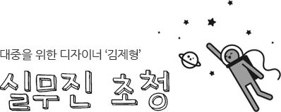
- 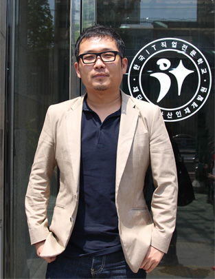
- 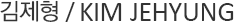
-
-
- 디자이너의 조건 '철학'
- 디자이너라면 반드시 자신만의 철학이 필요하다.
자신의 주장을 나타낼 수 있는 자신만의 슬로건과 디자인의 목적, 그리고 철학이 있어야 진정한 디자이너라 할 수 있다.
-
-
- '대중'에게 인정받는 디자인
- 디자인이란 대중적으로 전달되어야만 하는 일이므로 대중에게 어필 할 수 있어야 한다.
우리에게 대중이란 기업이다. 클라이언트가 곧 대중이며 그런 클라이언트가 원하는 디자인과 자신의 디자인 철학을 적절히 조율하는 것 자체가 디자인 의 한 과정이라고 할 수 있다.
클라이언트가 원하는대로 무조건 수용하거나 자신의 디자인 철학과 목적 만을 작품에 보여주는 것이 아닌 두 가지 모두를 수용하여 적절히 조율하는 것이 바로 우리 디자이너들의 몫이다.
- 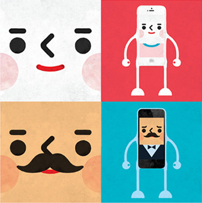
- 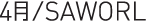
-
- 4月/SAWORL은 진보적 디자인 공동체이자 디자인 회사입니다.
브랜드디자인, 일러스트레이션, 편집디자인, 타이포그래피, 광고, 전시디자인, 제품디자인의 모든 표현의 베이스는 아트웍이며 그것을 분해하고 재해석하여 장르의 경계가 없는 새로운 디자인을 지향합니다. 이것은 디자인에 대한 4월만의 접근 방법이자 정체성이고 생각입니다. - 디자인은 모든 문화와 다양한 사회 속에 융합되어 반응하는 소통이자 결과물입니다. 현실적이고 장식적인 일러스트레이션과 드로잉, 조형물은 더이상 디자인요소가 아닌 독립적인 시대의 장르 입니다.
- 디자인은 대중을 위한 아트의 실현'이라는 4月/SAWORL이 오랫동안 유지해온 철학은 기업과 대중(사회)은 동등한 위치이며 디자인을 하는 목적을 동시에 나눈다는 서로의 의미를 두고 있습니다. 60년대 아르누보의 팝아트, 70년대의 모던컬쳐, 90년대의 얼터너티브 컬쳐, 지금의 새로운 시대에 이르기까지 시간을 초월한 다양한 아트웍과 디자인이 4月/SAWORL의 주제이며 표현영역 입니다.
- http://saworl.com
- 4月/SAWORL은 진보적 디자인 공동체이자 디자인 회사입니다.